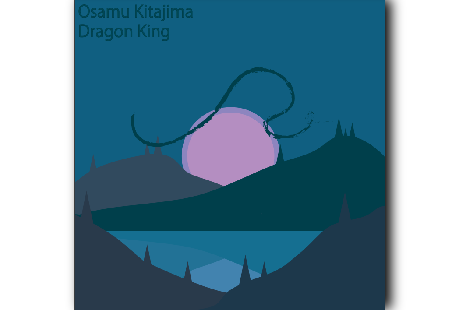

Dans le cadre d'une reparution hypothétique de l'album de musique Dragon King d'Osamu Kitajima, nous avons cherché à créer une nouvelle couverture qui permettrait d'illustrer le contenu ainsi que l'atmosphère de l'œuvre de l'auteur.